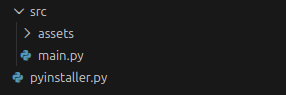

a python script and how to use it
import PyInstaller.__main__
import os
app_name = "MyApp"
file_name = "main.py"
assets_folder_name = "assets"
src_folder = "src"
app_file = os.path.join(src_folder, file_name)
assets_folder = os.path.join(src_folder, assets_folder_name)
PyInstaller.__main__.run([
f'--name={app_name}',
'--onefile',
'--windowed',
'--add-data', f'{assets_folder}:assets',
app_file,
])
FIRST OF ALL: open a cmd/terminal and run the command "pip install PyInstaller" if you are on Windows. BUT if you are on Linux, you need to create a venv in your project folder by doing:
1. run "cd path/to/your/project/folder"
2. run "python3 -m venv .venv"
3. run "source ./.venv/bin/activate"
4. run "pip install PyInstaller"
----------------------------------------------------
1. use this file structure:
2. you can change the main.py file name as long as you change the value file_name in pyinstaller.py to match it.
3. I recommend you placing all your images, assets and other files inside the "assets" folder so they get compiled in the final executable file.
4. you can rename the "assets" folder as long as you change the value assets_folder_name in pyinstaller.py to match it.
5. don't forget, you can change the app_name in pyinstaller.py to set your final executable file name.
FINALLY: run the pyinstaller.py to build your executable file.